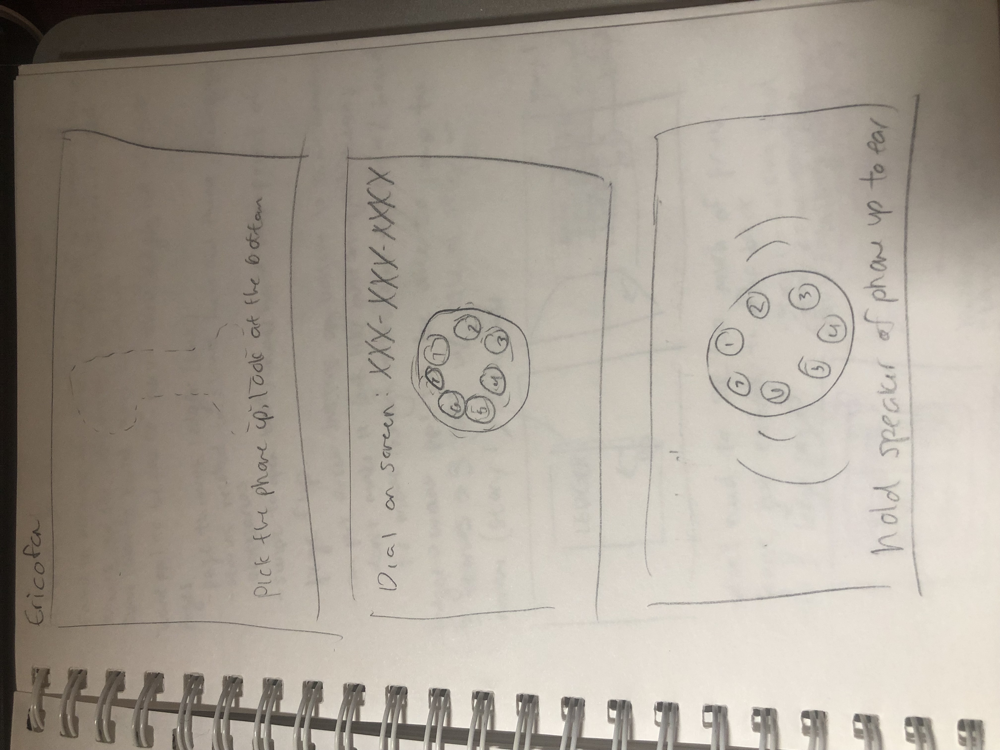
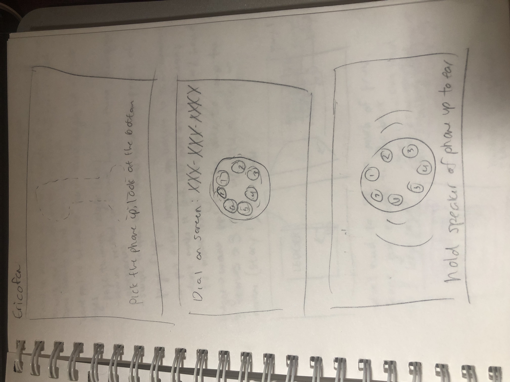
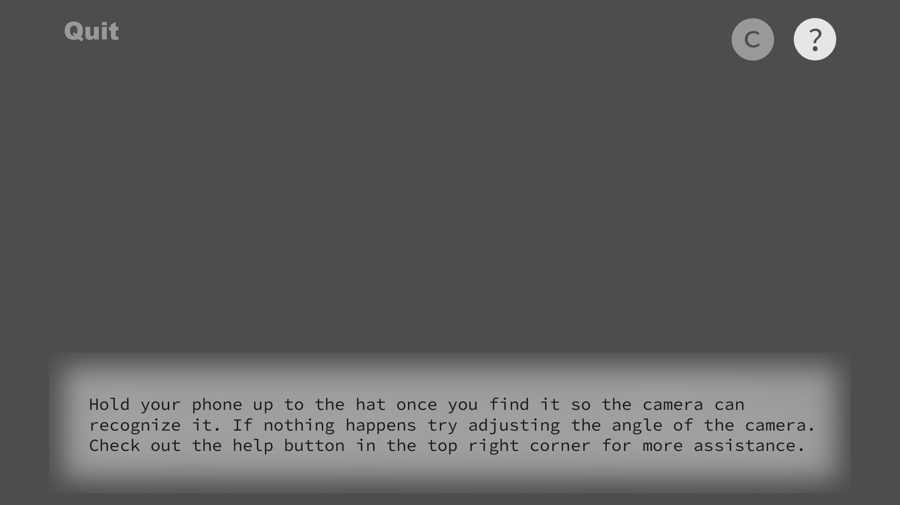
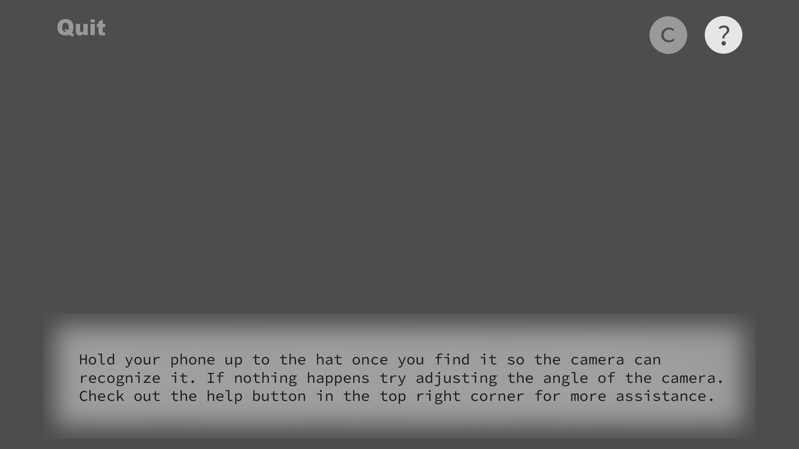

Rose Art AR
Overview
The Rose Art Museum sits on the periphery of Brandeis University's campus in Waltham, MA. It has showcased many exciting exhibits through the years, and it has an extensive permanent collection most people do not even know about. One of the most intriguing exhibits is Mark Dion's "The Undisciplined Collector". This room is carefully curated to showcase items that all predate 1962, and all are pulled from either the Rose Art permanent collection, the Brandeis Library archives, or the Brandeis Archaeology Department archives. Some of these items are objects used in everyday life in the 1950s-60s to paint a picture of daily life at the time, some are antiques from long before, some are memorabilia that were donated to the school, and some are works of art. Museum-goers are encouraged to touch and interact with items that are not encased in glass, and the exhibit is aiming to be tangible and immersive.

Problem
Though museum staff are always stationed close to the exhibit to inform people that they can enter this collectors room and touch almost whatever they like, even choose a record to play on the record player, I often observe tentative eyes and hands. People are not accustomed to having the freedom to touch in an art museum, and that is currently a barrier to their experience. When people do happen to touch and pick objects up, there is not much more to their experience with the object other than that. They gain no extra knowledge about the object or the world it is used in other than the texture, weight, and look of it. Even so, this exhibit is yearning to be immersive and interactive, and while it is intriguing as is, it can be so much more, and leave a much greater impact.
Solution
I collaborated with the museum as well as a software engineer/developer to create an Augmented Reality application to be used in this space. I worked as the project lead as well as the UX/UI designer and visual designer. Augmented Reality takes the real world environment through a camera lens, and adds more onto it using computer generated perceptual information. This application bridges the gap between the objects in the room and people's fear of touching them. It allows users to experience the objects in a whole new way and actually gain deeper insights into them, further than just picking them up and putting them down. Augmented reality is a powerful new technology that is very exciting to explore especially in terms of how users perceive it and interact with it. I believe it can make many experiences not only more exciting, but more accessible. This application enhances the museum and exhibit experience for users, and it makes the room come alive.
Walkthrough
There are eight objects in this exhibit that are targets that trigger augmented reality experiences. Most of these objects have been 3D scanned using the Vuforia 3D scanning app so the camera can recognize these objects from any angle. Each experience is designed to be a brief but immersive interaction that allows users to learn a little more about life during the 1950s-60 or more about the objects themselves. Users start off with a tutorial that teaches them how to use and iteract with the app and AR. From there, users are allowed to explore the exhibit freely and try to find the object targets. Each object target discovered unlocks a puzzle piece. If all 8 pieces are found and collected, the user can view a completed collage of images that sum up the experience. However, this is designed to be a worthwhile experience even if the user does not reach the very end by finding every single object and corresponding puzzle piece.
Design Process
I started as always with paper prototypes. I had to figure out the basic interaction that would occur with each object as well as how the tutorial would be laid out. A lot of background research was necessary to decide what kind of story each target object should tell. Research included online deep dives into the culture and multimedia of the time as well as lengthy interviews with museum staff and those with personal experiences in the time period. Once more than enough facts and anecdotes related to each target object were collected, I had to whittle them down to the most interesting points and create 15-30 second interactions out of them. I believed at first that users would not have the attention span for anything longer than 30 seconds, but some responses gathered from user testing indicated users would be willing to spend upwards of 30 minutes on the entire experience, so that gave me a little more freedom down the line to make the experiences a little more elaborate.
Paper Prototypes:
 

As soon as paper prototypes were completed I began communicating those design ideas to my developer so he could begin making the basic framework of the program. I concurrently made wireframes based on the paper prototypes and user tested using them to make adjustments. I checked in with my developer twice a week to check in on progress, give each other design and programming updates, and communicate new designs to be built. We did not start to build any target object interactions until the corresponding wireframes had undergone testing. The wireframes you see below are from iteration 3. Since AR includes the real and digital worlds, I needed to find some way to differentiate them in these representations of the screen. Thus, anything in color is part of the real world that is being seen through the camera, and anything in greyscale is augmented on and only seen on the screen.
Wireframes:
 



Three iterations of wireframes were made to reflect adjustments made based off of user tests. After those, I move on to high fidelity prototypes that also contained the assets that would be used in the final version of our game. Each interaction was built in the software using placeholder assets so we could see and test functionality first, and then placeholders were substituted for high fidelity assets. Testing with placeholders confirmed the fact that assets - especially those of buttons - needed extra attention paid to them so they could be seen no matter what the background image was. In fact, most assets required this consideration since the background could often be anything, and I had to assume the worst. Designing an interface for AR is a bit more challenging because of the variability of the environment that cannot be completely predicted. I found that the appearance of a neon glow stuck out well in most conditions, and users responded positively to those. I also found that having a bit of translucency in the text boxes added a nice touch and helped immerse the user in this AR world.
High Fidelity Prototypes:

Commentary
Augmented Reality is a really interesting new realm of technology that too many have had the opportunity to explore at my university. The expansion of possibilities that this technology provides also brings about the need for broadened knowledge about how the human and computer interact. Many more variables exist when designing something that needs to seamlessly integrate the digital and real worlds; I know I have only skimmed the surface, but it has been really exciting to explore these things and try to develop some theories myself whether they be about UI design principles and conventions, gamification and player motivation, or anything else in between.The novelty of AR means more interest and attraction, however it also means a steeper learning curve for users because there are not really many established conventions for it yet. I knew from the beginning that a big challenge in this app would be designing a tutorial that was both concise and comprehensive enough that the user would feel like they knew what to do. Not only that - because the app is an exploratory game and users need to find items, they would most likely need guidance along the way to prevent frustration as a result of not being able to find scannable items. In terms of the tutorial, I thought it best to use the least amount of text possible to lead the user to scanning the first item and triggering the AR. I wanted to teach them by example and not just through text instruction. I also wanted to make sure in this tutorial to establish the expectation or knowledge that any AR element could be interacted with and clicked on from the very start so the user could have the most fulfilling experience later on.
When it came to hints and help, I thought a lot about how to provide this support adequately throughout the game without being too overbearing. I thought at first it would be best to scaffold the help and have the guidance decrease as the game went on. This practice has proven to be effective in other technological platforms that are aiming to teach. However, after some critical analysis of the novel technology we were using and conversations with users, it became apparent that users would need more consistent guidance throughout this experience, especially because users’ prior experience with this technology could vary so widely. I was given the suggestion of designing “on demand” hints that users would always have available to them to mediate this issue. I liked that idea, but I did not want it to be so easy for the user. So, I designed the system that exists in the app now where there is always general help about how to trigger AR available, and on-demand hints are accessible within this help text, but take that extra click to access. Additionally, in order to access the second hint for any object, the user must close the help text and reopen it to click the hint button again. This minor inconvenience gently deterrs users from using hints too often, but also always makes it readily available, and I feel that was a good balance for this app specifically.
Providing incentive for users to play and interact with this app was important to me. Since the exhibit is immersive and intended to be interactive, I wanted this app to supplement that without taking anything away. I believe AR is a really great gateway into interactive Art exhibits because people are not accustomed to being allowed to touch things in an art museum, and the AR bridges that gap in the user’s mind, so I wanted to make this app something users would be really motivated to use. Initially I thought a story based game could be effective in stimulating motivation - it could enhance the immersion aspect of the exhibit and users could potentially get sucked in. However, after some user testing, I found there was a wide range in amount of time users were willing to spend on this app, some said they would spend around 2 minutes total, others said they would spend up to 45 minutes total to complete the game. At this point I realized that since each target is its own separate experience, they should be able to stand alone, and users should get as much out of using the app for 1 experience as they do from using it for all 8. This is why I ultimately decided on the puzzle as the main form of gamification. This way users could go around intending to collect all 8 pieces to see the final puzzle, they could just collect some pieces but not all and still get to see all the experiences, or they could ignore the puzzle all together and just focus on the experiences - how ever many suited their needs. I believe this model gives way to many different users and different play styles. It ensures all users can leave the exhibit and app with some form of satisfaction.
Because AR is still so novel, players seem to need less motivation to stick with the app longer at least in one use. This particular project did not let me investigate what would motivate players to be returning users, but I predict at that point the theories would be similar to any other standard application because the novelty of AR is gone after one use. Using Pokemon Go as an external example, that game has an AR feature, but most people don’t actually use it. It is the game itself and how well it engages and motivates the user that keeps the user coming back.
Regarding learning the actual content that had to do with the exhibit through the app, I really made sure to design the experiences so learning could be more subconscious and less on-the-nose. This was something I believed in from the start, so if there was not an interesting or stimulating way to present a fact or anecdote, I never wanted to force it. My goal was to have the user learn without them realizing they were learning at all. THe museum is an informal learning environment, contrary to a classroom, so it should not feel like the structure or learning rigor of a classroom. My favorite example of this is the TV experience. By flipping through the “channels” on the TV with the AR remote users could get a sense of what programs were popular during the 1950s-60s, the limited number of channels available, and the simplicity of the technology as seen through the remote. On top of that, users could feel like they were really sitting in the room watching television in the 1950s because of the way the AR was oriented to the real TV in the exhibit.
The biggest HCI challenge of all for this project was ensuring good usability and reliability of the application responding to the object targets and initiating the actual AR. The technology still has its limitations - lighting, hardware, 3D scan or 2D image quality, and a lot more can affect the reliability of the AR. It can never be the user’s problem if an object is not recognized properly and an AR experience does not work though. I worked all semester to try to solve these issues. I scanned more reliable objects, I adjusted designs of AR experiences to suit the target and its reliability, I even strategically placed objects that could be moved in areas that I knew would have good light. However, there were still issues, especially with devices with lower camera quality and processing speed. There are potential ways to design around this such as an archive or diary of already-triggered experiences so it is easier to look back, or possibly an easy screenshot feature built into the UI, but it is definitely worthy to note that this is probably the number one user experience issue that needs to be considered when it comes to AR. I believe the solution is a mixture of smart and strategic decision making when choosing targets and the environment the AR is to be used in as well as skillful design to work around issues that may still exist after that.